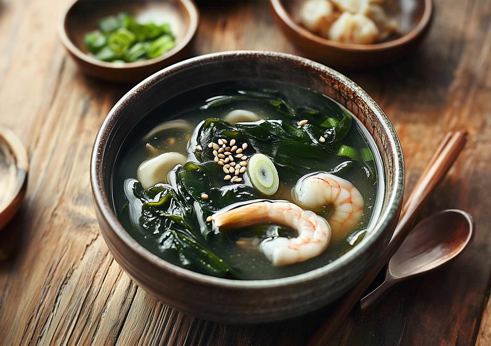

미역국

물

미역 10g

알새우
백합

참기름

국간장
1. 미역을 불리고 재료를 손질한다.
2인분을 기준으로 미역 10g을 물에 불린다.
알새우는 잘 손질하고 살이 발라진 백합을 깨끗하게 씻어 준비한다.
미역이 다 불려지면 채에 받쳐 물기를 제거하고 먹기 좋은 크기로 자른다.
2. 재료를 볶는다.
달궈진 냄비에 참기름을 두르고 손질해둔 알새우와 백합을 볶는다.
어느정도 재료가 익으면 국간장과 미역을 넣고 미역이 푸른 색을 띨 때까지 볶는다.
3. 보글보글 끓인다.
물 300mL를 붓고 강불로 올려 끓인다. 국물이 끓기 시작하면 물 500mL를 더 붓고 중불로 줄인 후 15분 이상 더 끓인다.
마지막에 취향에 맞게 국간장으로 간을 해주면 완성이다.
밥을 말아 먹으면 정말 맛있는 자꾸 생각나는 미역국.